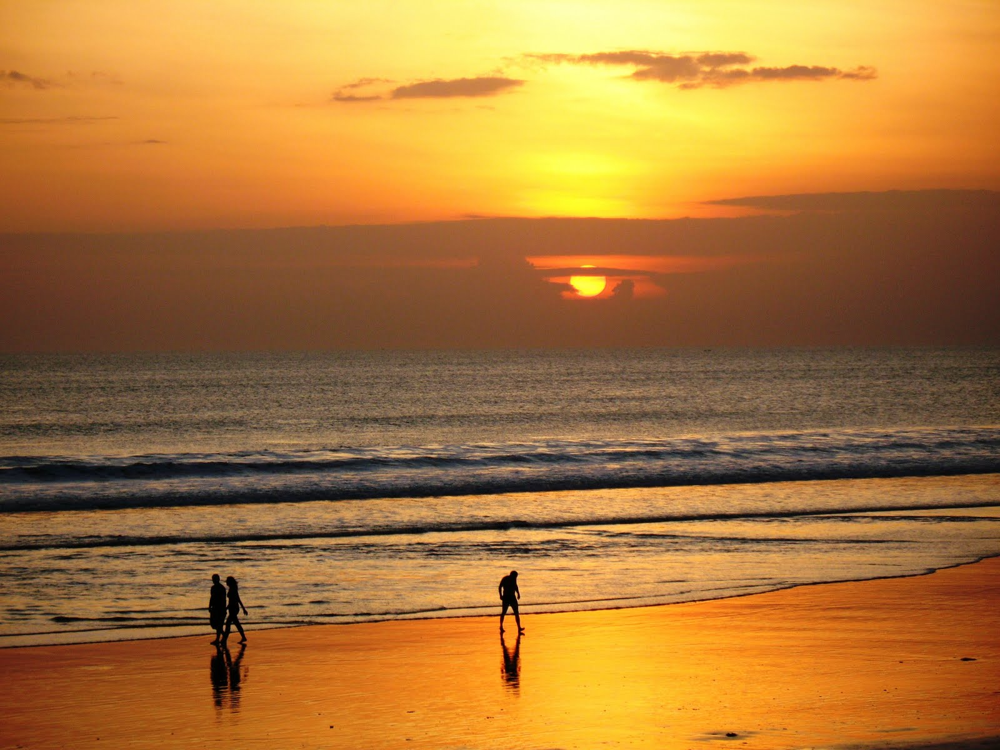
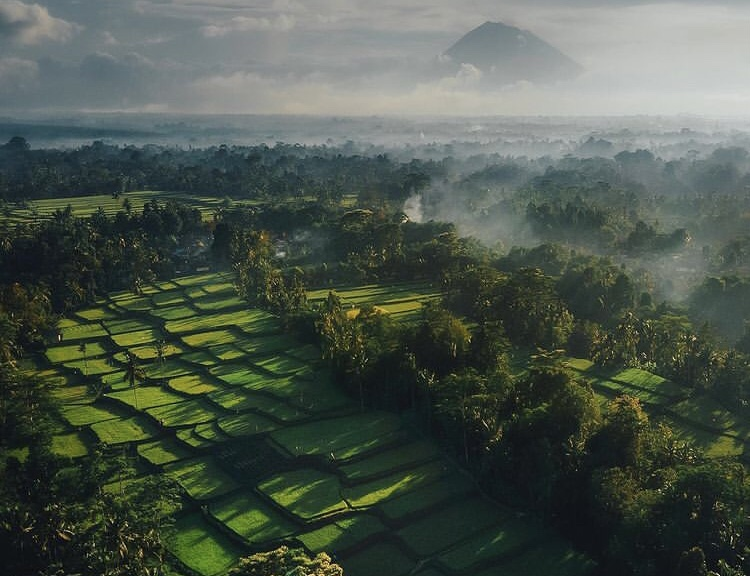
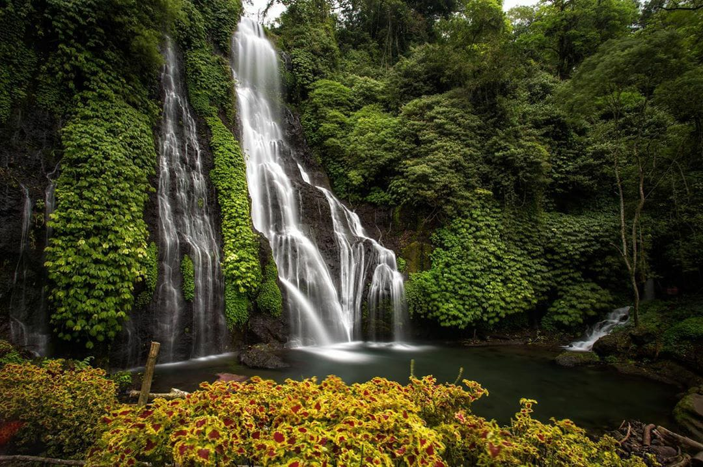
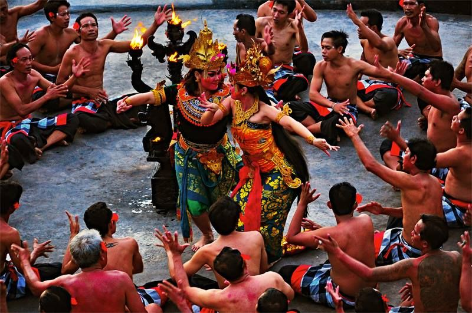
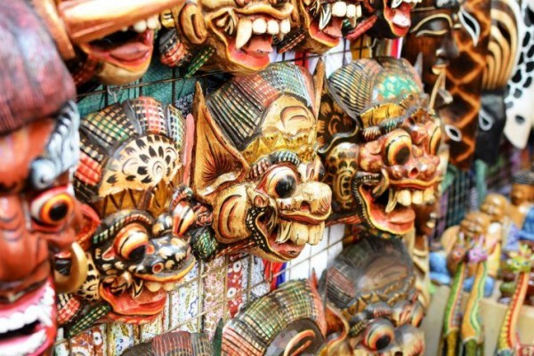
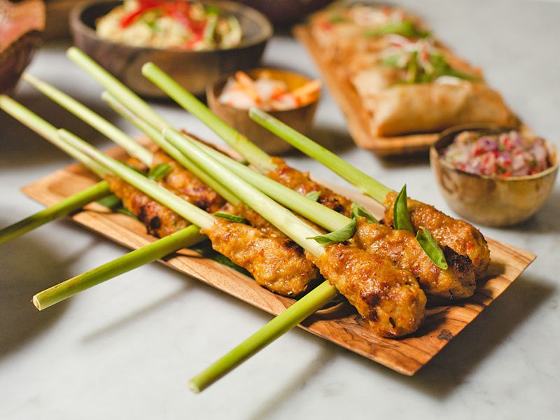
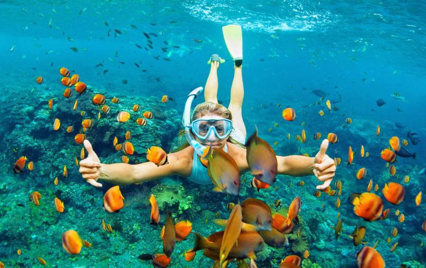
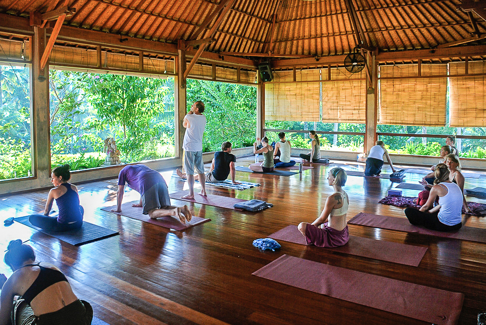
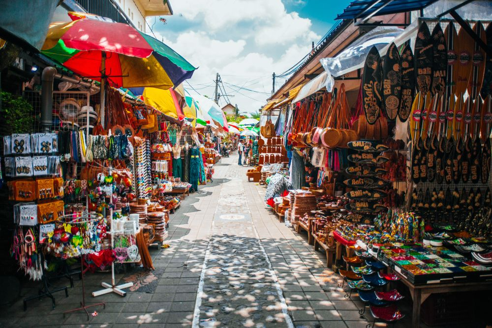

Pesona Alam
pesona alam Bali mencakup pantai-pantai yang menakjubkan, gunung dan sawah hijau yang indah, serta air terjun yang ajaib. Pantainya, seperti Kuta, Seminyak, dan Nusa Dua, menawarkan pasir putih yang lembut dan ombak yang sempurna untuk berselancar. Gunung Agung dan sawah terasering adalah contoh pegunungan dan pemandangan sawah yang menakjubkan. Pulau ini juga memiliki sejumlah air terjun indah seperti Tegenungan dan Sekumpul. Semua pesona alam ini menjadikan Bali sebagai tujuan alam yang menakjubkan bagi para wisatawan.
Pantai yang Menakjubkan

Salah satu aset terbesar Bali adalah pantainya yang indah. Pantai-pantai seperti Kuta, Seminyak, dan Nusa Dua menawarkan pasir putih yang lembut dan ombak yang sempurna untuk berselancar.
Gunung dan Sawah yang Hijau

Bali juga dikenal dengan pegunungan yang menakjubkan. Gunung Agung adalah gunung berapi tertinggi di pulau ini, dan trekking menuju puncaknya adalah pengalaman tak terlupakan. Anda juga akan menemukan sawah-sawah terasering yang hijau dan subur yang terkenal di seluruh dunia.
Air Terjun

Provinsi ini memiliki sejumlah air terjun yang indah. Air Terjun Tegenungan dan Air Terjun Sekumpul adalah dua contoh yang paling terkenal. Mereka memberikan pelarian yang sempurna dari hiruk-pikuk kota.
Budaya dan Tradisi
Budaya dan tradisi Bali mencakup agama Hindu yang dominan, dengan kuil-kuil yang indah dan upacara keagamaan yang mengagumkan seperti Kecak Dance dan Barong Dance. Selain itu, Bali dikenal dengan kerajinan tangan berkualitas tinggi, seperti ukiran kayu, lukisan tradisional, dan tenunan cantik. Hidangan khas Bali, seperti Nasi Campur dan Ayam Betutu, juga merupakan bagian integral dari budaya pulau ini. Selain itu, Bali juga dikenal dengan minuman kopi khasnya, Kopi Luwak. Semua elemen ini menciptakan lingkungan budaya yang kaya dan beragam di Bali.
Agama dan Upacara

Bali adalah rumah bagi sebagian besar penduduk yang beragama Hindu, dan ini tercermin dalam budaya sehari-hari mereka. Pulau ini dipenuhi dengan kuil-kuil indah dan upacara keagamaan yang mengagumkan seperti Kecak Dance dan Barong Dance.
Kerajinan Tangan

Bali terkenal dengan kerajinan tangan berkualitas tinggi. Anda dapat menemukan berbagai seni dan kerajinan seperti ukiran kayu, lukisan tradisional, dan tenunan cantik yang merupakan hasil tangan-tangan ahli seniman Bali.
Makanan Khas

Jangan lewatkan untuk mencoba hidangan khas Bali. Nasi Campur, Ayam Betutu, dan Lawar adalah beberapa hidangan yang harus Anda cicipi. Juga, jajalah kopi Bali yang terkenal, Kopi Luwak.
Aktivitas Wisata
Bali merupakan tempat berlibur bagi semua orang, Bali menawarkan beragam aktivitas air seperti snorkeling,menyelam dan rafting. selain itu Bali adalah tempat yang sempurna untuk meningkatkan kesehatan fisik dan mental Anda. Banyak pusat yoga dan meditasi terletak di pulau ini
Aktivitas Air

Bali menawarkan beragam aktivitas air seperti snorkeling, menyelam, dan rafting. Pulau ini adalah surga bagi pecinta air dan menyediakan pengalaman yang tak terlupakan.
Yoga dan Meditasi

Bali adalah tempat yang sempurna untuk meningkatkan kesehatan fisik dan mental Anda. Banyak pusat yoga dan meditasi terletak di pulau ini, yang menawarkan pelatihan dan praktik bagi para pencari ketenangan.
Belanja dan Hiburan

Jika Anda suka berbelanja, jangan lewatkan pasar tradisional di Ubud dan beragam toko mewah di Seminyak. Malam di Bali juga penuh hiburan, dengan klub malam dan bar yang hidup di berbagai daerah.